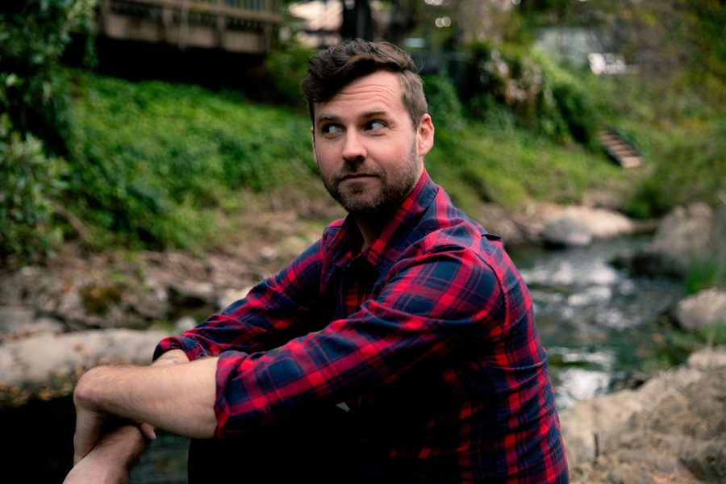
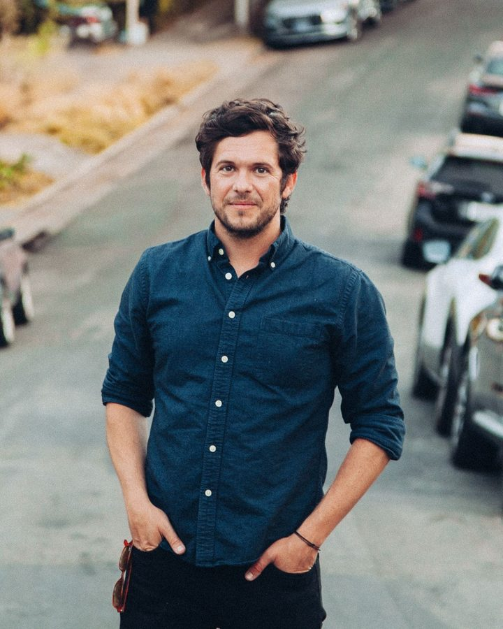
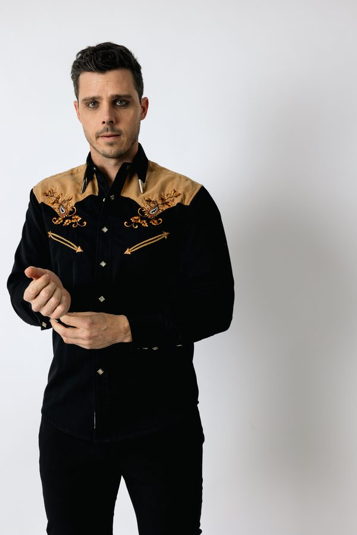

The Team
Three people. One production company. At least one bolo tie.

Ryan Tillotson
Producer
Ryan is the founder and CEO of acclaimed podcast house Straw Hut Media, which partners with Hulu, Netflix, Universal, and Rotten Tomatoes, among others. He produced “That Friend,” Bolo’s first feature. Hat company by day, tie company by night.

Alex Wall
Writer · Director · Producer
“That Friend” is Alex’s debut feature. His collaborations with Will Sterling have placed and been featured in the Academy Nicholl Fellowships, Austin Film Festival, Newport Beach Film Festival, Paris International Film Festival, and BlueCat. He edits and produces unscripted television for HBO, MAX, NBC, A&E, and Netflix. Also appears in the film as Baby Henry. It’s a long story.

William Sterling
Writer · Director · Producer
“That Friend” is the second feature from Will, whose work blends sharp comedy with strong emotional undercurrents. His meta-comedy “A Cell Phone Movie” was nominated for Best Debut Feature at Raindance 2025, and his debut novel “Fame by Misadventure” won Best Fiction at the 2024 National Indie Excellence Awards. Also appears in the film as Pastor Kevin. Bolo tie enthusiast.